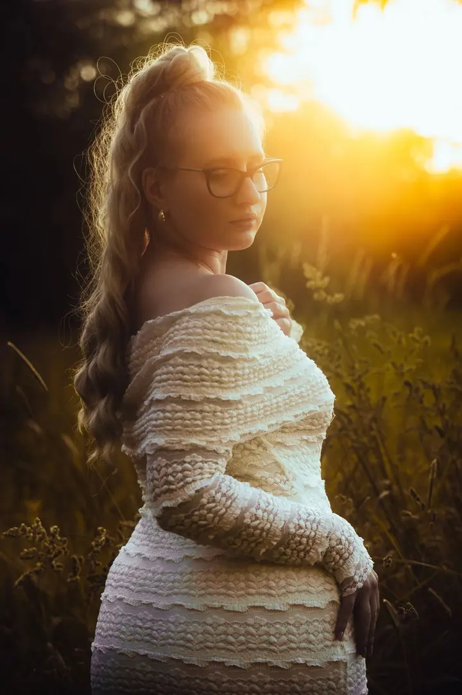
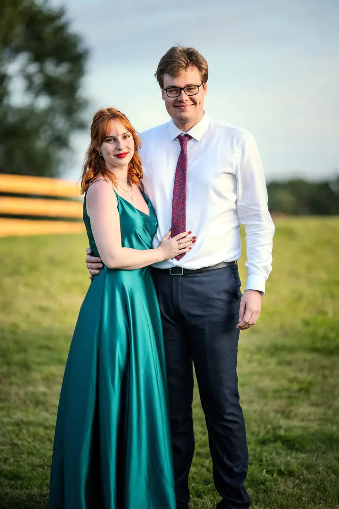
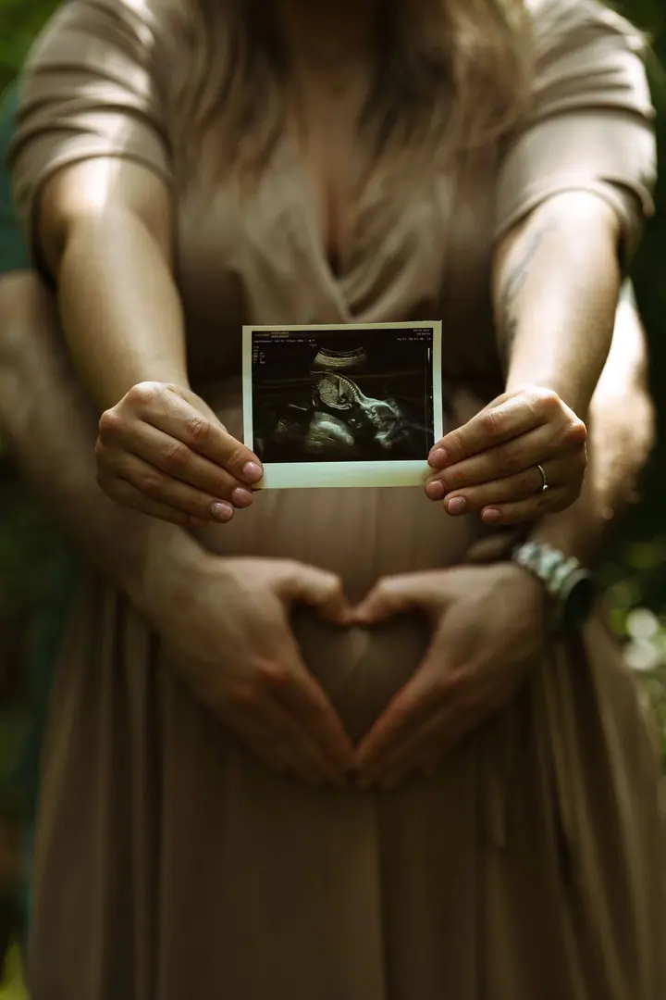
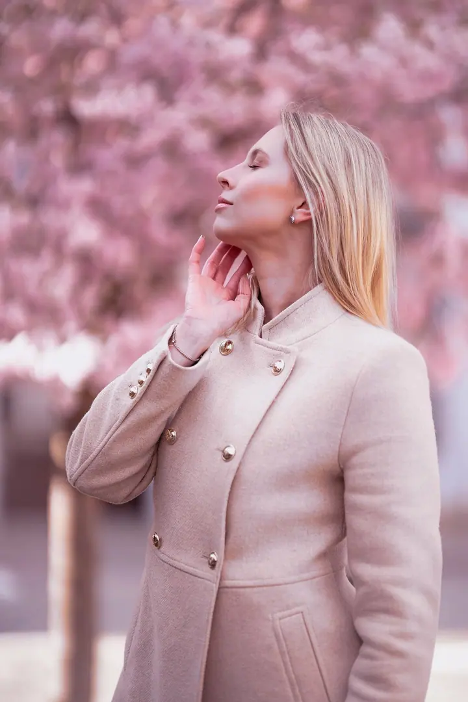
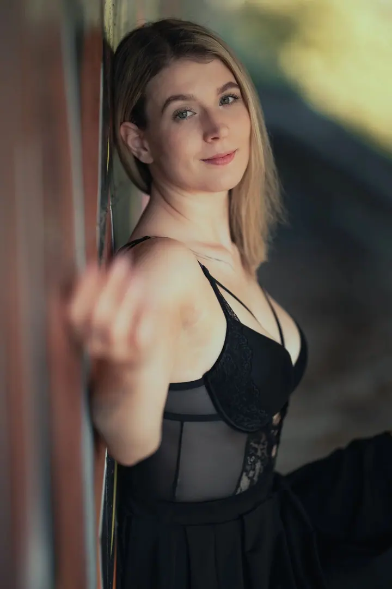
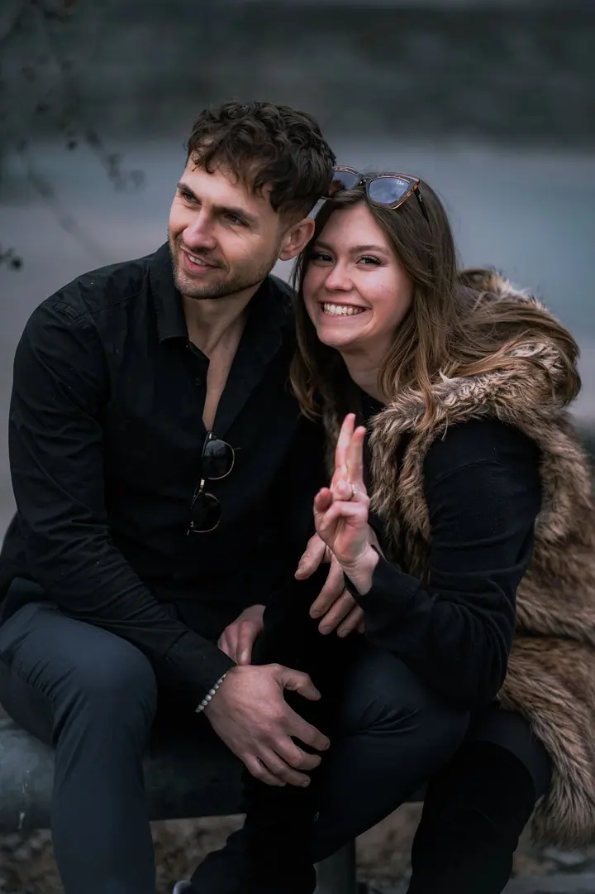
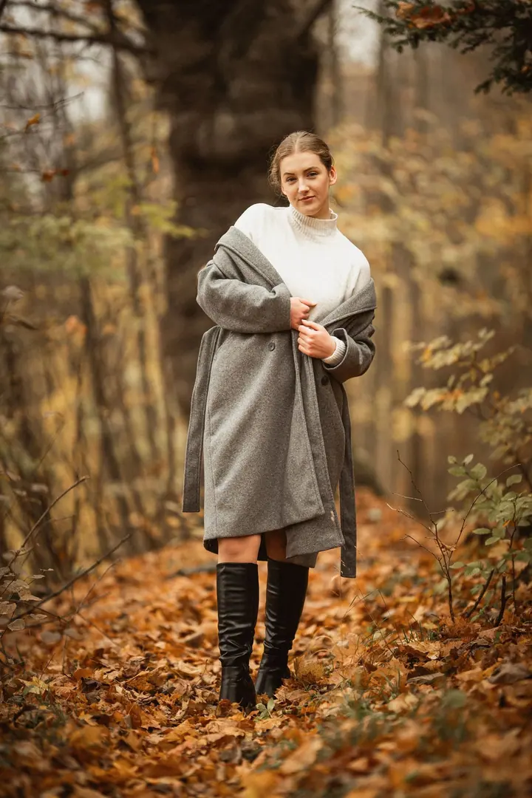
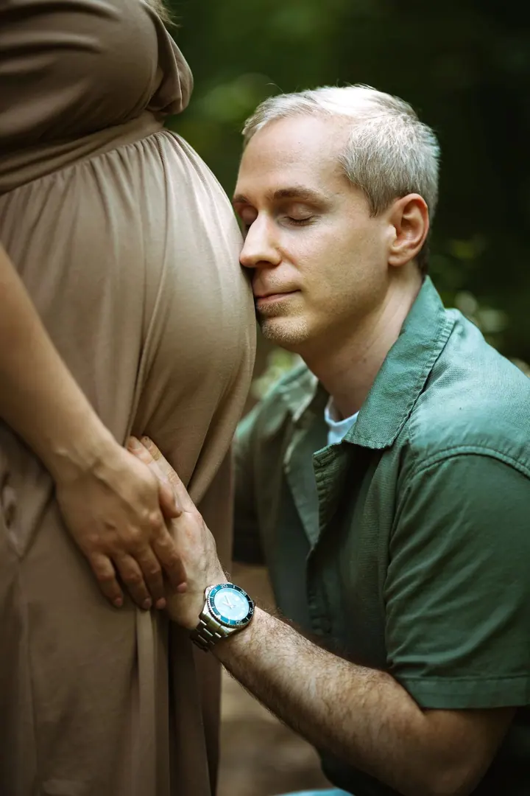
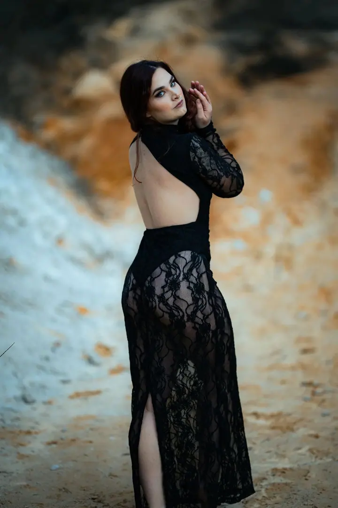

01 / 04
Portrétní focení
Individuální portrétní focení, které zachytí vaši osobnost a krásu. Fotím v ateliéru i venku.
Zeptat se na termín→








Portréty, které fotím srdcem
Zeptat se na termín →(01) Ahoj
Jmenuji se Rudolf Chmelař a focení je mou životní vášní . Specializuji se na portréty , rodinné, párové a svatební fotografie . Působím v Ostravě, ale fotím po celé České republice.
(02) Co fotím
01 / 04
Individuální portrétní focení, které zachytí vaši osobnost a krásu. Fotím v ateliéru i venku.
Zeptat se na termín→02 / 04
Romantické focení pro dva, které ukáže, jak to mezi vámi funguje a co k sobě cítíte.
Zeptat se na termín→03 / 04
Společné chvíle s vašimi nejbližšími, na které budete rádi vzpomínat.
Zeptat se na termín→Dále nabízím
Celý svatební den od příprav přes obřad až po odpolední zábavu. Soustředím se na skutečné momenty a emoce.
↗(04) Postup
Od první zprávy po hotovou galerii.
Krok 1 z 4
Ozvěte se mi telefonem nebo přes formulář a domluvíme se, co si představujete a kde budeme fotit.
Krok 2 z 4
Termín potvrdíte zálohou. U portrétu je to 500 Kč, u svatby 3 000 Kč.
Krok 3 z 4
Portrétní focení trvá 60 až 90 minut, venku nebo v ateliéru. Nikam nespěcháme, aby z fotek bylo vidět, jací opravdu jste.
Krok 4 z 4
Fotografie vám pošlu upravené v elektronické podobě. Svatební fotky dodávám do 14 dnů.
Nečekejte na příležitost, vytvořte si ji.
(05) Za objektivem
Začínal jsem amatérskými pokusy a postupně se z focení stalo mé životní poslání. Dnes se věnuji hlavně portrétní fotografii, ke které patří i focení rodin, párů a svateb.
Chci, abyste se při focení cítili dobře a mohli být sami sebou. Nejlepší fotografie podle mě vznikají, když se před objektivem uvolníte a celé focení si užijete. Proto se vždycky snažím, aby byla atmosféra příjemná a pohodová.
Nejvíc mě na focení baví, že můžu zachytit výrazy, emoce a osobnost každého člověka. A nejhezčí chvíle přichází na konci, když předávám hotové fotografie a vidím, že máte radost.
Rudolf
Rudolf Chmelař · Portrétní a svatební fotograf
Portrétní focení stojí 1 200 Kč. Fotíme 60 až 90 minut a dostanete 10 až 15 upravených fotografií v elektronické podobě. Focení v ateliéru je za příplatek.
Za 8 900 Kč vás fotím celý den: přípravy, obřad, společné focení i odpolední zábavu. Dostanete 400 až 600 fotografií na dřevěném designovém flashdisku a 50 až 70 upravených fotografií vytištěných.
Ano, fotím po celé České republice. Cestovné mimo Ostravu účtuji zvlášť, 5 Kč za kilometr.
Určitě. Snažím se, aby focení bylo v klidu a pohodě, a celou dobu vám budu radit. Nejlepší fotky vznikají ve chvíli, kdy na foťák zapomenete.
(07) Kontakt
Napište pár vět o tom, co si představujete, a termín, který se vám hodí.